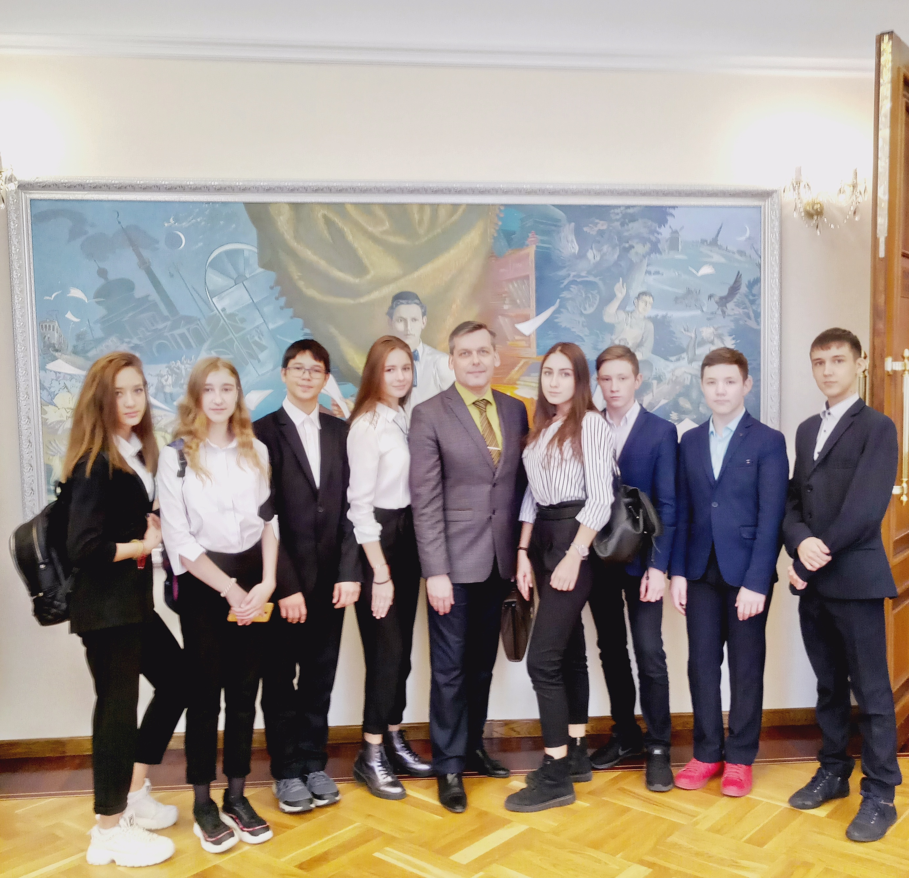
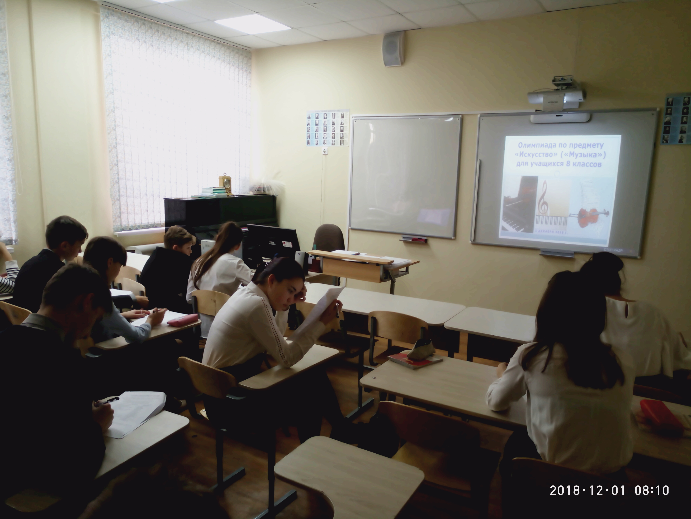
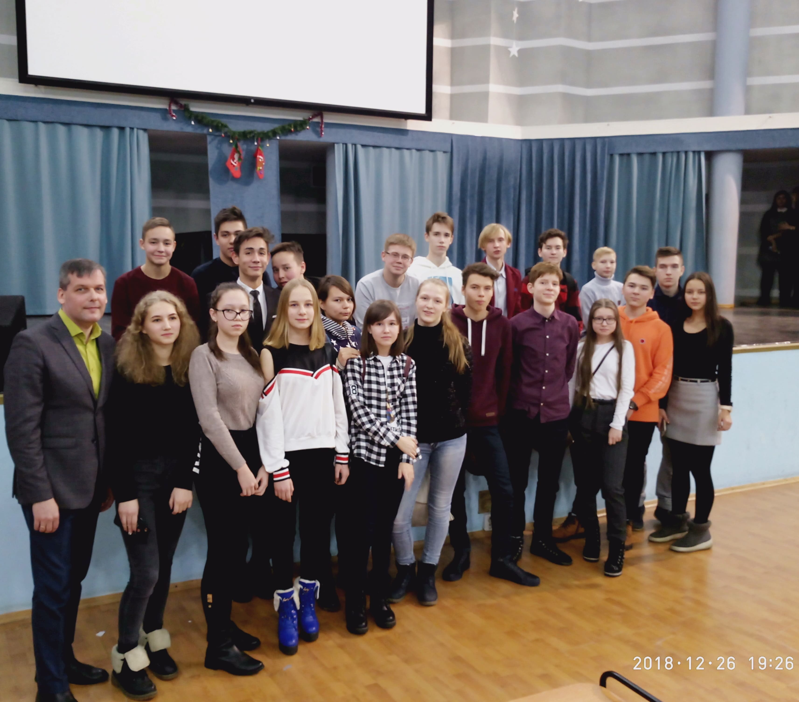
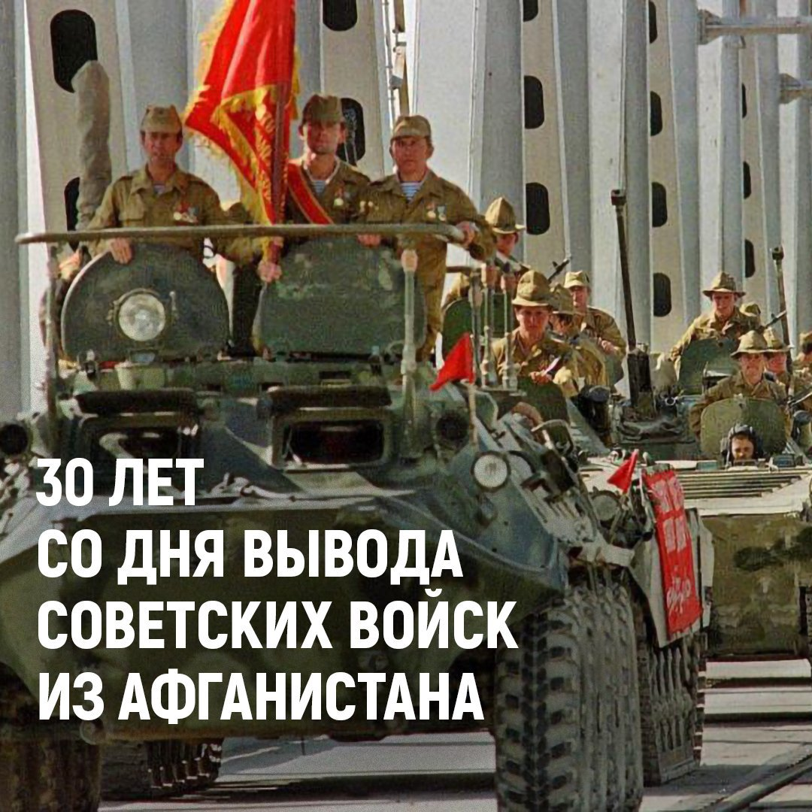
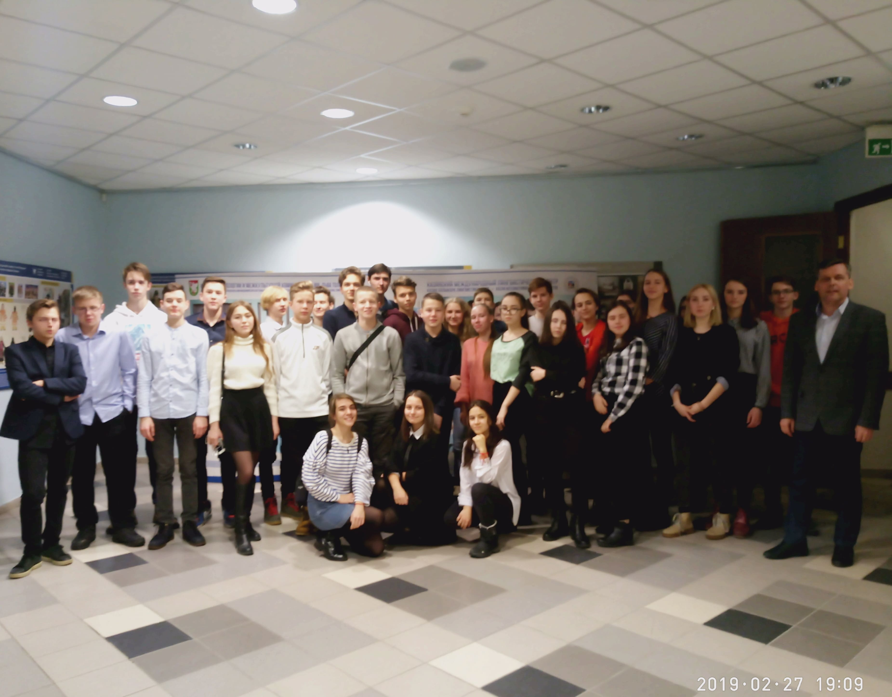
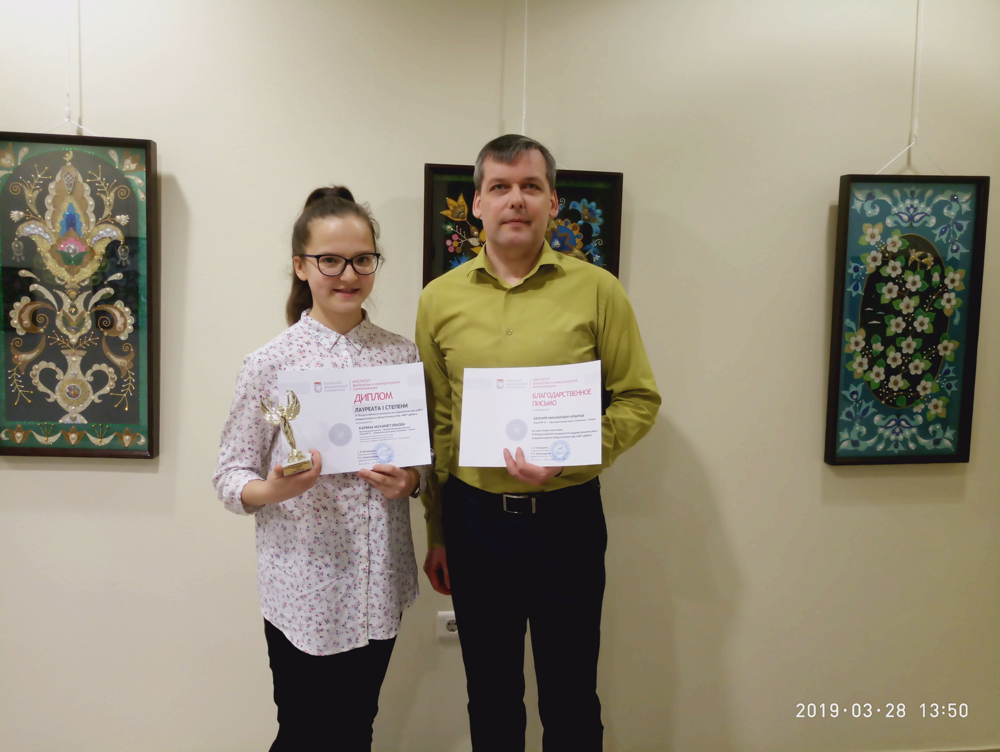
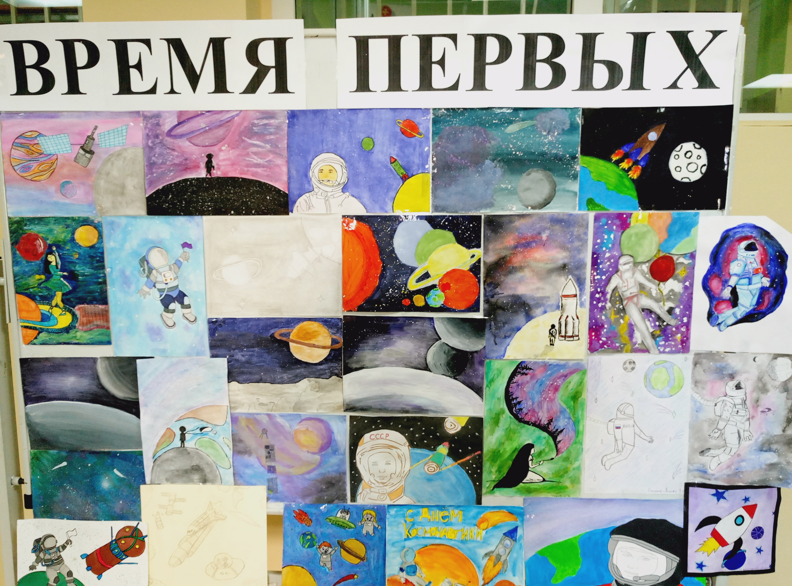
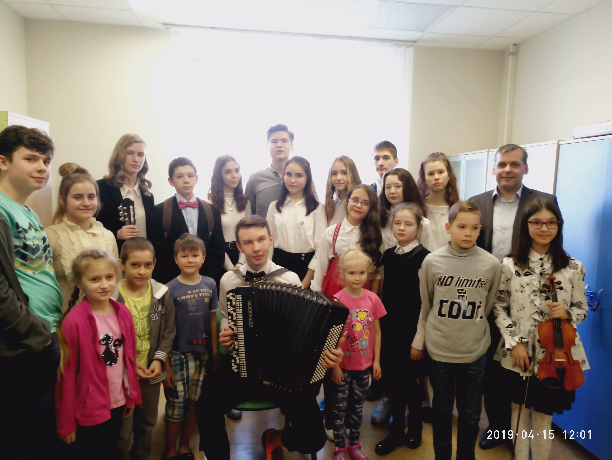
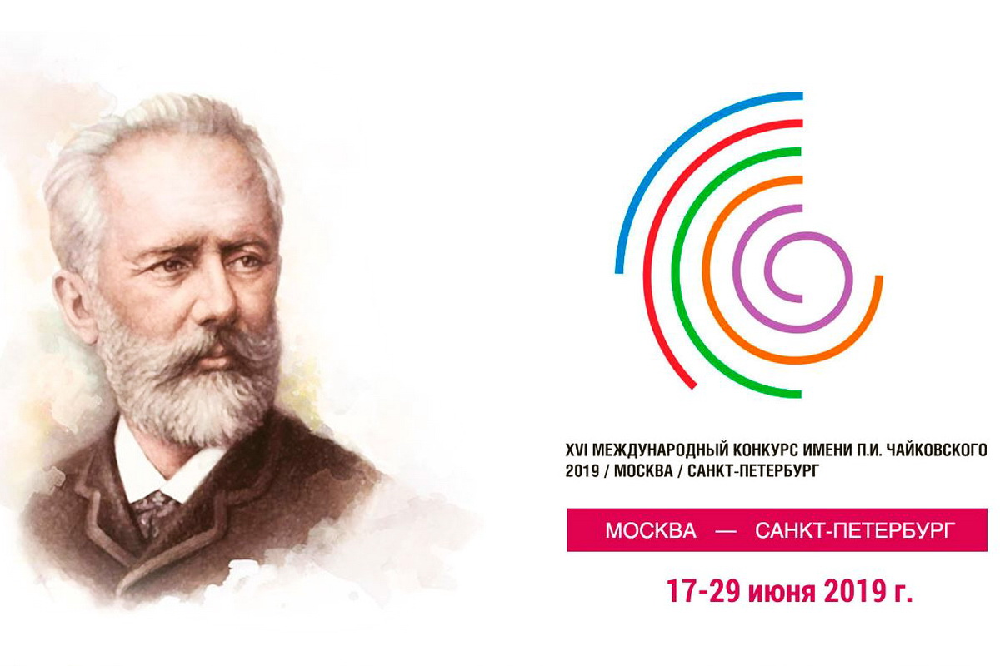
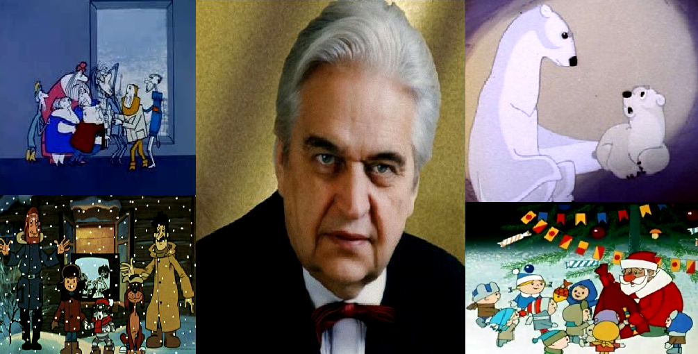

Сайт учителя предметной области "Искусство"
Ильичева Евгения Михайловича

15 октября 2018 г., мы с учащимися 8 «Г» класса посетили очередное тематическое мероприятие Татарской
государственной филармонии имени Габдуллы Тукая «Песни советских композиторов». Концерт прекрасно
дополнил тематику внеурочных занятий «Кружка любителей музыки», которые посещают данные учащиеся.

1 декабря 2018 г., в лицее прошла ежегодная олимпиада по предмету «Искусство» («Музыка») для учащихся 8
классов. В этом учебном году в ней приняли участие 19 человек из 111 обучающихся этой параллели.
Победители определились в 8 «А», 8 «Б», 8 «В», 8 «Г» классах. Молодцы!

26 декабря 2018 года мы с учащимися 9 классов посетили очередное мероприятие в рамках
музыкально-образовательного
лектория, проводимого на базе КФУ - института филологии и межкультурной коммуникации.

15 февраля 2019 г., для всех учащихся 8, 9 классов был проведен урок музыки «Пока мы помним – мы
живем!», посвященный 30 годовщине вывода Советских войск из республики Афганистан. Ребятам была
представлена ретроспектива афганских авторских песен. Каждая прозвучавшая песня была «прожита»,
«пережита» учащимися.

26 февраля 2019 года более 50 учащихся 9 классов посетили концерт "В ритме вальса" в рамках
музыкально-образовательного лектория.

28 марта 2019 года ученица 8 класса Мухаметзянова Карина стала Лауреатом I степени
Всероссийского конкурса по искусству "Арт-дебют", организованный Институтом филологии и межкультурных
коммуникаций КФУ.

В рамках декады космонавтики, проводимой с 10 – 20 апреля 2019 г., в фойе лицея была организована
выставка рисунков учащихся 6 классов по теме «Время первых...»

В рамках творческого проекта "Дети поют и играют для детей" 15 апреля в аллергологическом и
травматологическом отделении ДРКБ г. Казани был проведен очередной - 20 тематический концерт.
С 6 по 8 мая в рамках "Музыкальной гостиной" с учащимися 5-6 классов прошли внеурочные мероприятия по
теме "Песни Войны и Победы".
В рамках Международного Дня Музея запланированы посещения музеев города Казани учащимися 8-9
классов.

7 мая для учащихся параллели 8 классов нашего лицея прошел Урок музыки, посвященный дню рождения П.И.
Чайковского с использованием именитых произведений композитора (фортепианного концерта № 1; цикла
фортепианных пьес «Времена года», фортепианного цикла «Детский альбом»; фрагментов балетов «Щелкунчик»,
«Лебединое озеро»; фрагментов опер «Евгений Онегин», «Пиковая дама»).
Учитывая важность и значимость проведения XVI Международного конкура имени П.И. Чайковского в России, мы
посвятили этот урок и этому крупнейшему событию в мире классической музыки, являющимся национальным
достоянием нашей музыкальной культуры!

16 мая 2019 г., в рамках музыкальной гостиной для учащихся 6 классов прошло внеурочное мероприятие
«Памяти Евгения Крылатова…». Композитором было написано более 70 песен: «Лесной олень», «Ольховая
серёжка», «Крылатые качели», «Три белых коня», «Прекрасное далёко» и т.д. Евгений Крылатов – автор
музыки к более чем 160 к/ф (документальным, художественным, мультипликационным). Ребятам были напомнены
яркие музыкальные фрагменты из кинофильмов: «Приключения электроника», «Чародеи», «Гостья из будущего»,
«Каникулы в Простоквашино». В заключение мероприятия учащиеся исполнили полюбившиеся песни композитора.